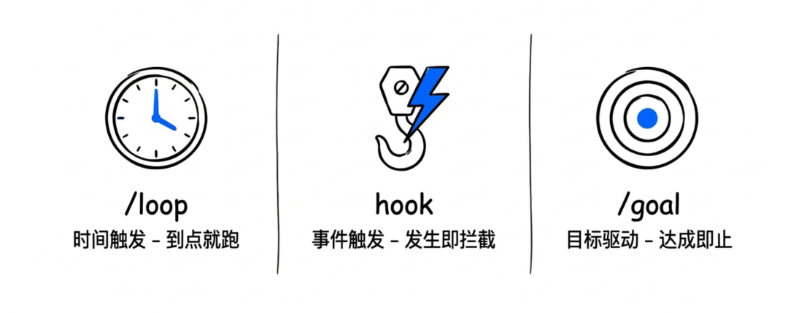
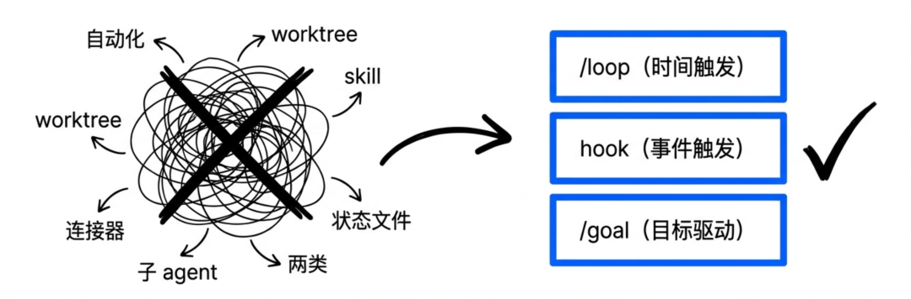
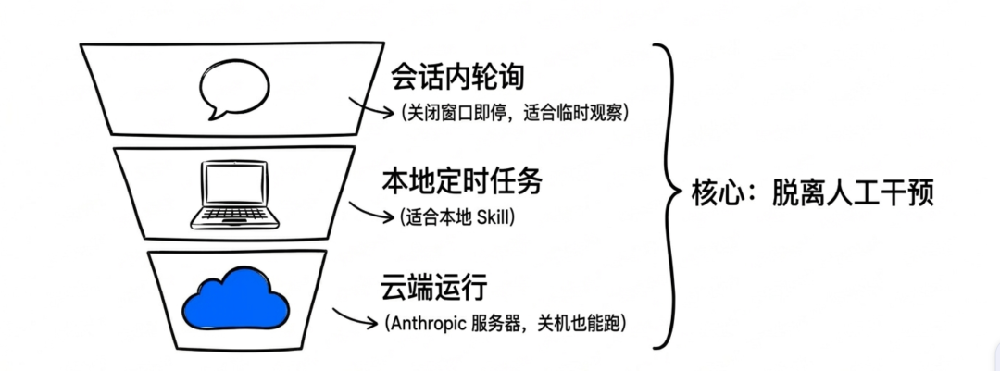
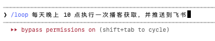
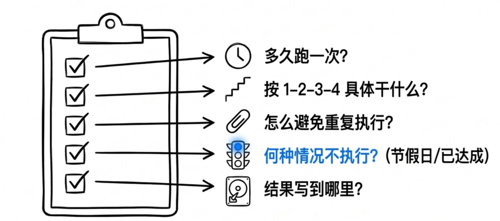
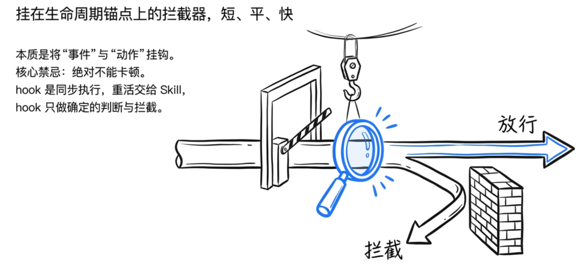
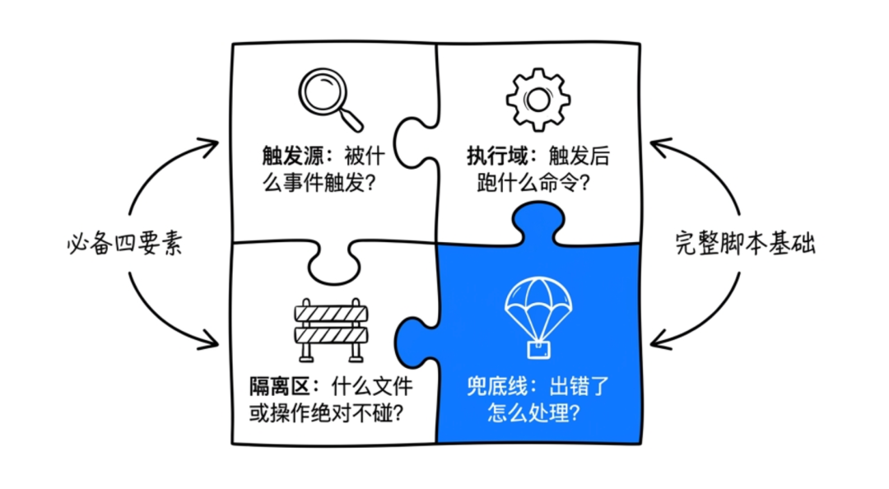
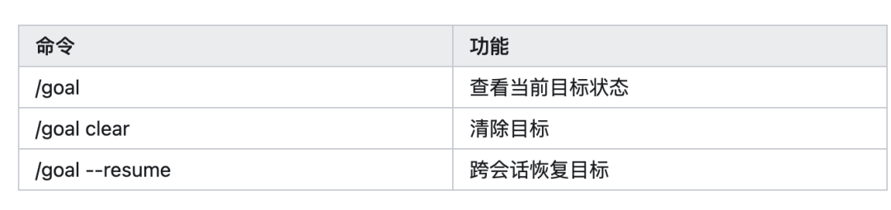
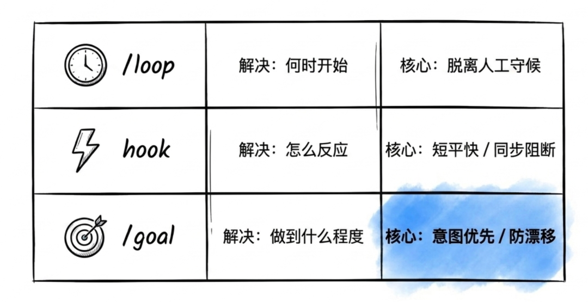
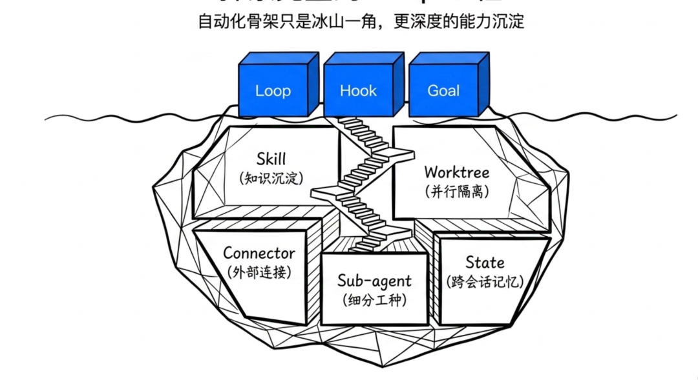

最近 Loop Engineering 很火。
Claude 的工程师公开说他自己已经不再 prompt Claude 了，现在是他设计的 loop 自动化驱动 Claude。
每天都能刷到好多篇文章，讲"Loop engineer 的使用"。
但说实话，我看了很多个理论和实践兼具的教程。
并且动手搭建一周之后，我觉得 Loop Engineering 对个人来说，落地真的太…难…了…
相比之前的
一个完整的 loop 要搭 6 个模块：自动化、worktree、skill、连接器、子 agent、状态文件。
我甚至都不明确要把自己哪块的工作 loop 起来，搭建完之后也不知道怎么检测有效性？
折腾了好几天没跑稳定。
但是在折腾的这段时间，我重新认识了和 Loop Engineering 相关的三个能力：

/hook：事件触发，AI 干完某件事自动跑一段脚本，比如写完文件就检查、提交代码前先扫密钥 /loop：时间触发，到点自动跑一段预设任务，比如每天凌晨抓 RSS、每晚 10 点处理播客 /goal：目标驱动，给 AI 一个完成条件，它自己规划、执行、验证，没达成就再来一轮
这三个用起来其实很简单，在 Claude Code 里打斜杠/hook、/loop、/goal就能触发。Codex 那边也能找到对应的能力。
这篇文章我们把 Loop engineer 先放一放，先讲这三个用起来很稳的、每天都能跑的能力，帮你挖掘 token 的剩余价值。
好用这三个，已经能让 Agent 的价值上一个台阶了。
下面我提供一些我自己跑的稳定的案例。以及我提炼出来的提示词和方法论，可以直接复制拿去用。
/loop 的能力，简单说就一句话，按时间间隔，到点就跑用户预设 prompt。
Claude Code 现在有三层 loop 的方案。

会话内轮询，跑在本地的当前会话里，关掉窗口就停，适合调用本地资源的。 - 更短间隔的会话轮询，每天触发多次任务。
云端跑在 Anthropic 服务器上，笔记本关机也跑，适合稳定跑不被电脑关机影响的
loop 在 Codex 那边叫 Automations，使用场景差不多。
推荐两个我自己做的 loop，供参考。
第一个，每天的播客处理流水线。
我关注了一批 AI 相关的播客和 YouTube 频道，加起来四十几个。
每天晚上 10 点跑：

拉过去 24 小时的更新；按播主权重和标题关键词过滤一遍，挑出 3-5 个值得处理的；最后通过飞书机器人推到我的"播客摘要"知识库节点。
早上起来打开飞书就有当天的播客文章。
但有一个问题，因为跑在本地对话里，对话窗口关闭了任务就终止了。
第二个，凌晨三点的"省 token 集中跑"。
Claude Pro 是按 5 小时滑动窗口算 token 上限的。也就是说，白天工作时段疯狂跑 AI，到下午很容易撞到限额。但凌晨没人用，额度纯浪费。
所以我做了一件事：把所有不需要实时的任务，全部打包到凌晨 3 点跑。
具体清单包括：
扫一遍 RSS 把新文章按主题归到 02 scope/01 trends/跑 topic-collector 从 Twitter / Reddit / Hacker News 抓今日 AI 热点 用 content-topic-generator 把这些热点生成 5 条选题草稿放进 02 scope/02 ideas/把昨天 cortex 里的对话摘要按主题分类归档 扫一遍 09 frames/目录有没有忘了重命名的截图，顺手补上
这些就是运行在我个人知识库里的小机器人，根据我每日产出的内容自动整理我的知识库。
早上 9 点我打开电脑，今日热点、当日选题、最新素材已经全都在 Obsidian 里准备好了。
我只需要直接进入"挑题—写稿"环节，前面那些"收集整理"的功夫一律不用做。
写 /loop 提示词我自己摸出来五件事必须想清楚再写：

把你每天重复在做的事写下来，挑一件丢给 /loop，剩下的时间留给真正需要你判断的事。
hook 这个词很有意思，就是"钩子"的意思。我第一次认识它是 webhook，一个服务发生某件事的时候，主动请求数据，它把"事件"和"动作"挂上钩。

在 Claude Code 里 hook 是一段写死的 shell 命令，挂在 agent 生命周期的固定锚点上。事件一发生，命令就跑。
下面是几个我自己挂着的 hook，顺便讲一下写 hook 的方法。
第一个，AI 腔扫描器。
写文章最怕 AI 帮我改稿改成 AI 味。"众所周知"、"不是而是"、"本质上是"、"这意味着"
这种词一出来文章就毁了。但我又经常让 Claude 帮我润色段落，每次都得自己一行行回头看，烦得要死。
后来挂了个 hook。每次 Claude 在01 forge/目录下写完 .md 文件，hook 自动跑一遍 AI 腔关键词词典，命中了直接往抛任务给 Claude："你刚才用了'本质上'这个词，按写作规范这是黑名单，请重写这段。"
Claude 收到就会自己回去改。整个过程我不在场。这玩意挂上之后，我后台写文章的速度差不多翻倍。
写 hook 的时候 prompt 是这样的：
帮我配一个 hook：
触发条件是 Claude 在 ~/obsidian/01 / 任何子目录下用 写了 .md 文件。
动作是 grep 一遍我维护的黑名单词典（路径在 10 /AI腔黑名单.txt），命中任何一个就 exit 2，stderr 输出"检测到 AI 腔关键词：[词]，请按 10/写作风格.md 重写这段"。
如果没命中正常放行，不要打印任何东西。不要处理 Read 操作
第二个，Git commit 前的密钥扫描。
有一次我让 Claude 帮我整理 Skill 目录，它顺手 commit 了一波，结果把我的API key 一起推上去了。
小红书的网友在用我的 Skill 时来提醒我 API key 没有隐藏，我才知道。
现在挂了个 hook，每次 commit 之前 hook 先跑一遍git diff --cached，扫里面有没有 API key，命中就直接阻断，让 Claude 看到错误信息回去清理 staging。
写法很简单：
帮我配一个 hook，匹配 bash 工具调用里包含 git commit 的命令。
触发后跑 git diff --cached --no-color，grep 一组危险模式：sk- 开头、gsk_ 开头、AKIA 开头、-----BEGIN 开头、私钥文件名（.pem .key）、还有 api_key=、password=、secret= 这种 inline 赋值。
命中任何一条就 exit 2，stderr 写清楚命中了哪条、文件在哪、第几行。
没命中就放行，不输出。
写 hook 的时候要注意

被什么事件触发、触发后做什么动作、出错了怎么兜底、什么文件什么操作绝对不要碰。
这四样写清楚 Claude 就能一次给你配出能直接用的 hook。
hook 一定要短平快。hook 是同步执行的，hook 卡住整个 agent 就跟着卡。重活留给 Skill 或者后台进程，hook 里只放确定性的判断和拦截。
/goal 和前两个不一样。是按目标来驱动 agent 执行。
Claude Code 和 Codex 都有 /goal 命令，逻辑是一样的，你给它一条完成条件，它自己规划、自己执行、自己验证，没达成就再来一轮。
但 /goal 这东西最难用，因为它给了 AI 最大的自由度，也最容易跑歪。
什么时候用 /goal？
我的经验是，任务会超过 30 分钟、或者你预感中途要反复补充需求，就值得让 AI 先写 goal。小修小补、单文件改一行的事不要用，多一层仪式感反而拖累。
我自己总结了一个写 goal 的模板：
我想完成下面这个任务：
[在这里写你的真实需求]
开始实现前，请先为你自己写一个新的 /goal。把我的意图整理成具体目标，明确范围、约束、子任务、风险和验收标准。
如果这个任务适合并行，请为相互独立的部分派生 agents。每个 agent 都要有自己的 dedicated /goal，并说明它需要交付什么。
主线程负责协调和最终汇总。子 agent 只返回结果，不做最终决定。
如果执行过程中需要修改 goal，请先明确说明改了什么、为什么改，再继续执行。
代码任务再追加三条：先读现有 codebase 并遵循本地模式、不要做无关重构、完成前用最相关的测试或检查验证一遍。
关于 goal 的一些命令：

写 /goal 的关键就五件事：
先写意图不要写步骤； 要求 AI 先把意图翻译成 goal； 判断要不要多 Agent 并行（不是越多越好）； 主线程必须保留协调权（别让子 agent 互相抢方向）； 目标漂移时必须显式说明改了什么、为什么改。
这三个工具就是我现在 AI 工作流的自动化骨架。

但这三个加起来，也只是 Loop Engineering 的一角。

还有 Skill（项目知识沉淀）、Worktree（多 agent 并行隔离）、Connector（GitHub / 飞书 / Linear 连接器）、Sub-agent（写代码的 ≠ 判完成的）、State（跨会话记忆）这几块。
每一块往深了挖都是一两篇文章。
后面有新的用法，再来分享给大家。